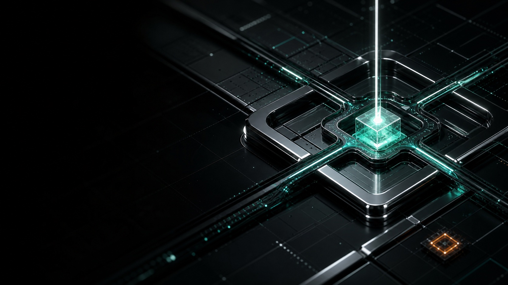
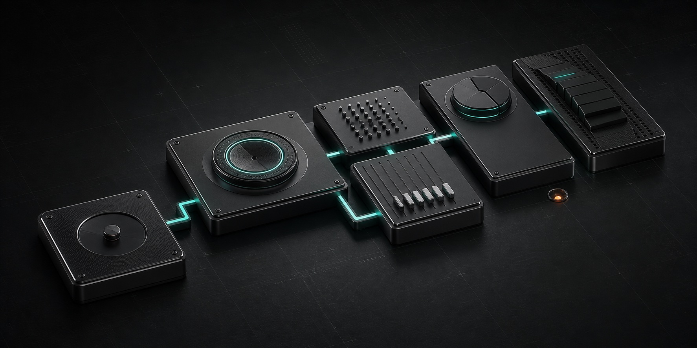

Каналов много, картины нет
Заявки приходят из Telegram, карт, сайта и рекомендаций. Никто не видит весь путь целиком.
Решение для хаоса →За несколько минут находим слабое место в пути заявки. Затем собираем одну работающую связку, подключаем понятную аналитику и усиливаем то, что действительно приносит деньги.

Для собственников, которым нужен ответ. Не отчёт на сорок слайдов, не новый кабинет и не обещание волшебной кнопки.
Неважно, сколько у вас сотрудников и какой рекламный бюджет. Важно, что происходит с заявкой после первого касания.
Заявки приходят из Telegram, карт, сайта и рекомендаций. Никто не видит весь путь целиком.
Решение для хаоса →Клики и лиды есть. Непонятно, где заканчивается маркетинг и начинается потеря денег.
Решение для роста →Вы видите отчёты, публикации и часы работы. Но не видите, какое решение принять завтра.
Вернуть прозрачность →Вы не хотите строить большой отдел до первого подтверждённого сигнала. Это разумно.
Начать с пилота →Алгоритм, комиссия или блокировка могут изменить экономику за один день. Нужен собственный контур спроса.
Вернуть контроль →Вы не обязаны становиться маркетологом, чтобы понимать, за что платите.
Мы переводим данные на язык решений: что отключить, что поправить, куда вложить следующий рубль и когда остановиться.
Можно начать с бесплатной диагностики или одной связки. Каждый следующий продукт подключается только тогда, когда предыдущий уже даёт понятный сигнал.

Контент приводит → связка собирает → Пульс удерживает → GEO накапливает.
Вы видите логику, стоимость и критерий остановки до того, как мы просим масштабировать бюджет.
Смотрим не на все каналы сразу, а на конкретный разрыв в пути клиента.
Собираем минимальную рабочую связку и заранее определяем стоп-сигнал.
Фиксируем не объём активности, а изменение в заявках, скорости и деньгах.
Масштабируем только тот механизм, который уже дал понятный сигнал.
Проблема часто не в недостатке рекламы, а в отсутствии следующего действия после заявки. Перед публичным использованием показатель требует сверки с первоисточником.
Менеджер отвечает, когда успевает. Скорость зависит от человека, а не от процесса.
Каждая заявка получает статус. Собственник видит, где и почему остановилось движение.
Сначала маршрут, потом трафик. Новый охват не льётся в старую утечку.
TURBIUM не забирает у вас управление. Мы добавляем элемент, после которого система становится видимой.
Ответьте на несколько понятных вопросов. В конце получите модельную оценку и рекомендуемый первый шаг без звонка и обязательств.